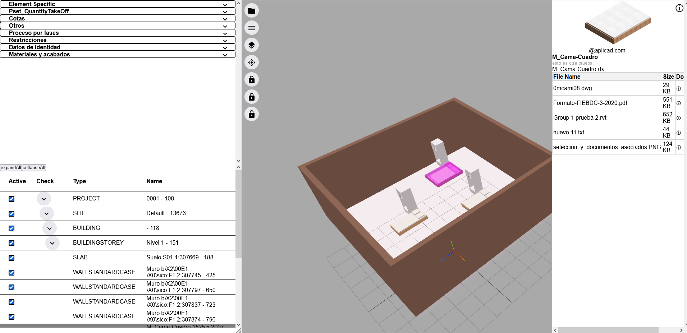
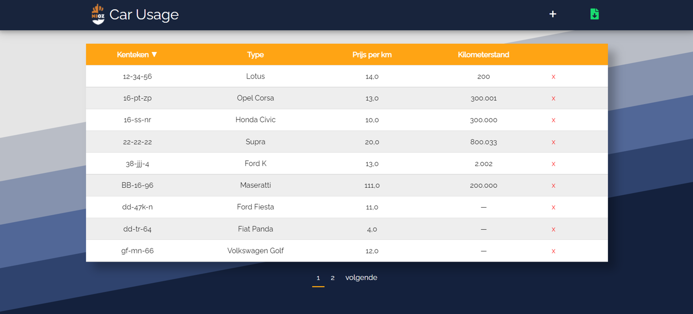

Doorontwikkeling van de stageopdracht.
Een project dat ik zelf ben begonnen om mijn financiën in kaart te brengen. Ik ben hier nog wel even mee bezig en wil er ook wat meer tijd in steken als ik eenmaal klaar ben met UX Advanced. Ook ben ik in gesprek met een budgetcoach om deze software uit te brengen, voor studenten die graag meer inzicht in hun eigen financiën willen. Ik ben van plan als dit project een versie 1.0 paraat heeft. Het uit te brengen en de repository online te zetten, zodat andere mensen het kunnen gebruiken mochten ze het tegenkomen en ook eigen input kunnen geven. Op het moment maak ik er zelf wel gebruik van, alleen heeft het nog niet de UX-ervaring die ik wil leveren, dat wil ik wel serieus nemen op het moment dat andere mensen het gaan gebruiken. Door dit te doen ben ik ook bezig met een cursus over Docker, want ik wil deze software uitbrengen zonder dat dit online gehost hoeft te worden en mensen eigen baas zijn over hun eigen data. Deze app zal geen data van andere gebruikers opslaan en er hoeft ook niet betaald te worden voor de software.
Code Along die ik gevolgd heb voor een beter begrip van API's en hoe je die met een clean architecture kan opzetten. Hierin heb ik geleerd over hoe je API Responses kan terug geven in je API's. Hoe je DTO's het beste kan implemteren voor je API en MVC. Hoe ik DTO's aan mijn models kan mappen en vice versa.
Doorontwikkeling van de stageopdracht.
VAC#CIN (VBA Afbouwen C# Code INfaseren)
Nadat ik klaar was op het MBO en voordat ik begon op het HBO kwam ik dit tegen door op "Werkstudent IT" te googlen. Ik kwam ChipSoft tegen en heb gelijk gesolliciteerd.
Code Along die ik heb gevolgd over het juist opzetten van een MVC architectuur. In deze cursus heb ik ook over het Unit of Work (UoW) design pattern geleerd.
Voor een keuzedeel op school mocht ik een eigen project bouwen hiervoor heb ik besloten om in .NET een Hotel bookingsysteem te bouwen. Ik had een MVC front-end en een RestAPI als back-end. Maar ik wilde het mij wel lastiger maken door de authenticatie zelf te doen, zodat ik er meer over zou leren. Dat is mij dus gelukt het was wel lastig om dit te realiseren maar werkte wel uiteindelijk. Wel kreeg ik als feedback van de docent, dat het een erg vet project is en dat het gaaf is dat ik de authenticatie zelf gebouwd heb, alleen dit moet ik nooit meer doen. Aangezien er zijn allerlei functies voor je zijn die .NET zelf voor je regelt wat betreft authenticatie.
ApliCAD is een erg klein bedrijf zo'n 3 a 4 man waar ik zat voor mijn afstudeerstage in Spanje. Hier heb ik gebouwd aan BIM (Building Information Modeling) software. Dit heb ik gebouwd in Angular, alleen een front-end stack Aan het eind kon je gebouwen inspecteren en alle details zoals: afmetingen, hoeveel van elk detail aanwezig was, benamingen en schalen en daarin de doorsnede zien. Deze software gebruikte ApliCAD al maar ze wilde hun eigen bouwen en daar heb ik een start mee kunnen maken. De bestanden die je kan inladen heten IFC files deze bestanden kun je inspecteren. Het was erg nichemarkt het IFC. Ik vond het vaak erg lastig om dingen over het programmeren van IFC te vinden en documentatie was erg schaars online. Gelukkig kon mijn stagebegeleider Alejandro mij helpen als ik ergens mee zat. Ook was dit de eerste keer dat ik Angular leerde te gebruiken dat ging mij best goed af. Ik deed een cursus waar ik de tijd voor kreeg en had al snel door hoe de architectuur in elkaar zat. Ook heb ik zes maanden in Castellón de la plana gewoond. Hier ging ik voor het eerst op mijzelf wonen wel samen met wat vrienden. Ik was al bezig met Spaans leren via Duolingo en echt actief opzoeken naar wat standaard zinnen zijn die je zegt. In de eerste drie weken kreeg ik Spaans lessen om toch simpel Spaans te kunnen spreken in een stad waar veel mensen vooral Spaans kunnen. Dus werd ik vaak gedwongen om Spaans te spreken

Bij het NIOZ deed ik mijn eerste stage toen ik op het MBO zat. Ik heb hier in Python Django, HTML, CSS & JS een systeem gebouwd waarin je auto's kunt toevoegen en beheren. Aan deze auto's kun je ook ritten koppelen. Dit systeem wordt gebruikt door de receptie van het NIOZ. Ze kunnen hiermee mensen die een auto lenen voor werkgebruik registreren en dan worden de kosten van de rit gedeclareerd bij de desbetreffende afdeling. Ik vond deze stage erg leerzaam en heb er veel geleerd. Zeker omdat het mijn eerste baan/stage in IT was. Maar ook omdat ik mijn eigen API gebouwd had in Python Django. Ik wist pas veel later wat ik echt had gebouwd, omdat ik de lesstof van het MBO erg matig vond. Maar vanuit mijn stagebegeleiders kreeg ik positieve feedback en mocht ik opzoek zijn naar een afstudeerstage, dan kan ik altijd terug aankloppen. Ook heb ik hier een maand lang verslaglegging gekregen. Omdat mijn verslagen van laag niveau waren ik heb hier echt de tijd voor gekregen om verslagen sterk te leren schrijven. Wel waren ze heel enthousiast over dat ik een eventuele stage zou doen in Spanje daar was ik al achteraan aan het gaan in die tijd.
